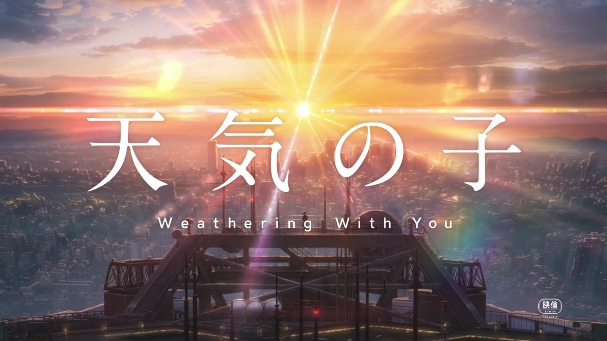

TwoDots
首 页
|
视 频
|
热 门
|
消 息
|
个人信息
|
登 录
|
注 册
|
历 史
还没有浏览记录哦,快去观影吧!

全 部
剧集精选
排行榜
预 告
解 说
排行榜
二维码


![比尔博·巴金斯是100多岁的霍比特人，住在故乡夏尔，生性喜欢冒险，在年轻时的一次探险经历中，他从怪物咕噜手中得到了至尊魔戒，这枚戒指是黑暗魔君索伦打造的至尊魔戒，拥有奴役世界的邪恶力量，能够统领其他几枚力量之戒，在3000年前的人类联盟和半兽人大军的战役中，联盟取得了胜利 ，并得到了至尊魔戒，数千年的辗转后，魔戒落到咕噜手中，被比尔博碰巧得到。
因为和魔戒的朝夕相处，比尔博的心性也受到了影响，在他111岁的生日宴会上，他决定把一切都留给侄子佛罗多（伊利亚‧伍德 饰)，继续冒险。
比尔博的好朋友灰袍巫师甘道夫（伊恩·麦克莱恩 饰）知道至尊魔戒的秘密，同时，黑暗魔君索伦已经知道他的魔戒落在哈比族的手中。索伦正在重新建造要塞巴拉多，集结无数的半兽人，准备以大军 夺取魔戒，并且征服全世界。
甘道夫说服佛罗多将魔戒护送到精灵王国瑞文希尔，佛罗多在好朋友山姆、皮平和梅利的陪同下，在跃马旅店得到了刚铎王子阿拉贡的帮助，历经艰难，终于到达了精灵王国。
然而，精灵族并不愿意保管这个邪恶的至尊魔戒，中土各国代表开会讨论，达成意见，准备将至尊魔戒送到末日山脉的烈焰中彻底销毁，佛罗多挺身而出接受了这个任务，这次，陪伴他的除了三个好朋友，还有甘道夫、阿拉贡、精灵莱戈拉斯（奥兰多‧布鲁姆 饰）、人类博罗米尔、侏儒金利。
一路上，魔戒远征军除了要逃避索伦爪牙黑骑士和半兽人的追杀之外，更要抵抗至尊魔戒本身的邪恶诱惑，前途困难重重](img/slider4.png)